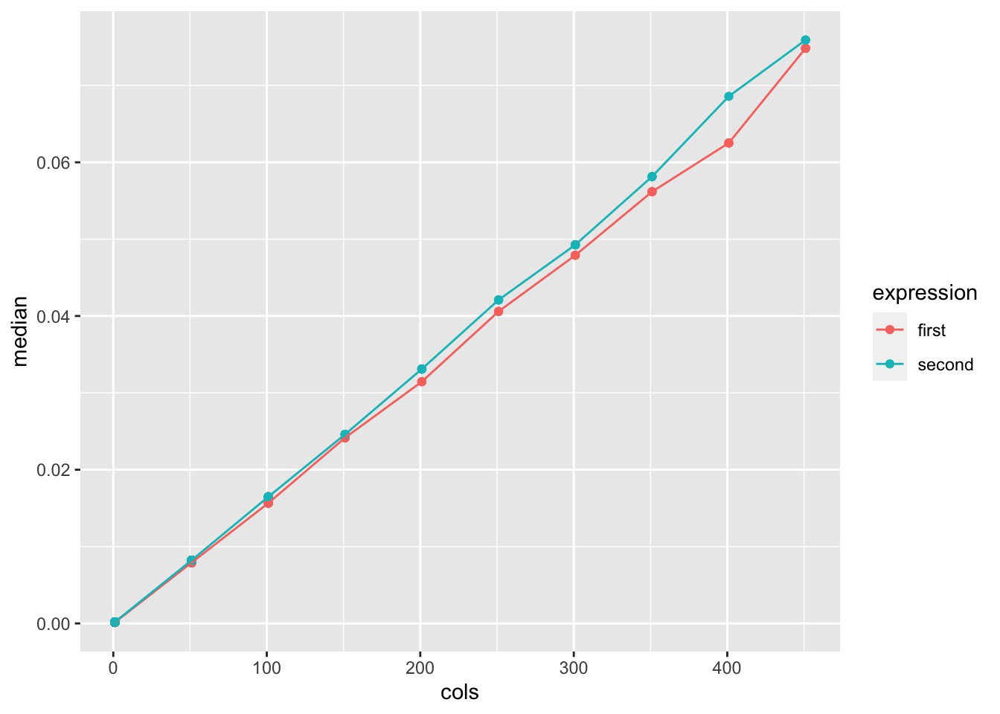

The variables a, b, and c will all refer to the same object in memory. In other terms, a, b, and c are aliases for the same object. d will point to a different object at a different place in memory. However, the contents of the object pointed to by d will be equal to the contents of the object pointed to by a, b, c.
print(lobstr::obj_addr(mean))
[1] "0x12190e158"
print(lobstr::obj_addr(base::mean))
[1] "0x12190e158"
print(lobstr::obj_addr(get("mean")))
[1] "0x12190e158"
print(lobstr::obj_addr(evalq(mean)))
[1] "0x12190e158"
print(lobstr::obj_addr(match.fun("mean")))
[1] "0x12190e158"
Yes, the different methods of accessing the mean function all point to the same underlying object.
Automatic conversion could cause an issue if the new, changed variable names are significantly different from the original names and a data analyst now can not find the column name easily or existing code for that column name is now nonfunctional. Perhaps the syntactically invalid portion of the name carries information about the data that will be lost with automatic correction. This behavior can be enabled or disabled by the check.names argument.
The character "X" is prepended if necessary. All invalid characters are translated to ".". A missing value is translated to "NA". Names which match R keywords have a dot appended to them. Duplicated values are altered by make.unique.
The textbook did not mention that syntactic names can not start with a dot followed by a number. Thus, “.123e1” is not syntactic.
2.3.6 Exercises
tracemem(1:10) is not useful since the vector 1:10 is not referred to by any variable accessible in our environment. Thus, we will not make any changes to the vector, which defeats the point of tracking changes to the vector in memory.
R must make a copy of the vector since the vector was initialized for integers while one of the values is being replaced with a numeric value (float). Since R vectors must be of the same type, R must convert the vector to being numeric when inserting the 4. Additionally, the R double type use twice the memory allocation as integers so the double 4 would not fit in the vector anyways (if I make assumptions about the working of R vectors in memory).
a —————–> 1:10 <—
_____—|^ l
b —> | ‘^ |’ ^ | l
l^ l———- ^
c —> | ’ | ’^ |. -|—————-> 1:10
Solutions On Paper
2.4.1 Exercises
object.size() believes that y has 100 copies of the list, while obj_size() recognizes that y only has 100 references to the same list. Thus, object.size() estimates the size of y to be approximately 100 times that of obj_size().
The size of obj_size(funs) is rather misleading since the environment would always contain the base functions mean, sd, and var regardless of whether funs existed. Since most the the memory listed as being for funs is used to store these functions, the marginal memory use of having funs is much smaller than obj_size() makes it appear.
8000000 B
8000016 B
8000016 B
16000016 B
16000016 B
16000016 B
24000016 B
2.5.3 Exersizes
A circular list is not created because the list x is copied when the list x is added to itself.
# A tibble: 20 × 14
expression cols min median `itr/sec` mem_alloc `gc/sec` n_itr n_gc
<bch:expr> <dbl> <bch:tm> <bch:tm> <dbl> <bch:byt> <dbl> <int> <dbl>
1 first 1 112.09µs 129.48µs 7549. 389KB 33.0 3200 14
2 second 1 157.6µs 175.66µs 5633. 301.9KB 25.7 2630 12
3 first 51 7.5ms 7.91ms 127. 11.7MB 99.7 33 26
4 second 51 7.77ms 8.21ms 122. 11.7MB 77.6 36 23
5 first 101 15.39ms 15.65ms 63.8 23.3MB 357. 5 28
6 second 101 16.25ms 16.48ms 60.8 23.2MB 105. 11 19
7 first 151 23.75ms 24.16ms 41.5 35MB 291. 3 21
8 second 151 24.24ms 24.6ms 40.6 34.6MB 122. 5 15
9 first 201 30.8ms 31.45ms 31.8 46.7MB 207. 2 13
10 second 201 32.11ms 33.1ms 30.4 46.1MB 60.8 5 10
11 first 251 40.13ms 40.59ms 24.6 58.5MB 123. 2 10
12 second 251 41.76ms 42.09ms 23.8 57.6MB 71.4 3 9
13 first 301 47.2ms 47.9ms 20.9 70.4MB 93.9 2 9
14 second 301 48.83ms 49.26ms 20.3 69MB 30.5 4 6
15 first 351 55.11ms 56.17ms 17.9 82.3MB 35.8 3 6
16 second 351 56.25ms 58.14ms 17.4 80.5MB 34.7 3 6
17 first 401 61.53ms 62.51ms 16.1 94.4MB 26.8 3 5
18 second 401 68.58ms 68.58ms 14.6 92MB 102. 1 7
19 first 451 71.71ms 74.83ms 13.5 106.5MB 18.1 3 4
20 second 451 74.18ms 75.91ms 13.2 103.4MB 32.9 2 5
# ℹ 5 more variables: total_time <bch:tm>, result <list>, memory <list>,
# time <list>, gc <list>
library(tidyverse)
── Attaching core tidyverse packages ──────────────────────── tidyverse 2.0.0 ──
✔ dplyr 1.1.4 ✔ readr 2.1.4
✔ forcats 1.0.0 ✔ stringr 1.5.1
✔ ggplot2 3.4.4 ✔ tibble 3.2.1
✔ lubridate 1.9.3 ✔ tidyr 1.3.0
✔ purrr 1.0.2
── Conflicts ────────────────────────────────────────── tidyverse_conflicts() ──
✖ dplyr::filter() masks stats::filter()
✖ dplyr::lag() masks stats::lag()
ℹ Use the conflicted package (<http://conflicted.r-lib.org/>) to force all conflicts to become errors
results %>%unnest(c(time, gc)) %>%filter(gc =="none") %>%mutate(expression =as.character(expression)) %>%ggplot(aes(x = cols, y = median, color = expression)) +geom_point() +geom_line()

I surprisingly find that both median subtracting functions have very similar median runtimes. For both functions, runtime appears to grow O(logn) with the number of cols.
Lets try and see.
e1 <- rlang::env(a =1, b =2, c =3)#tracemem(e1)e2 <- e1e1$c =8
An error results if tracemem is used on an environment.